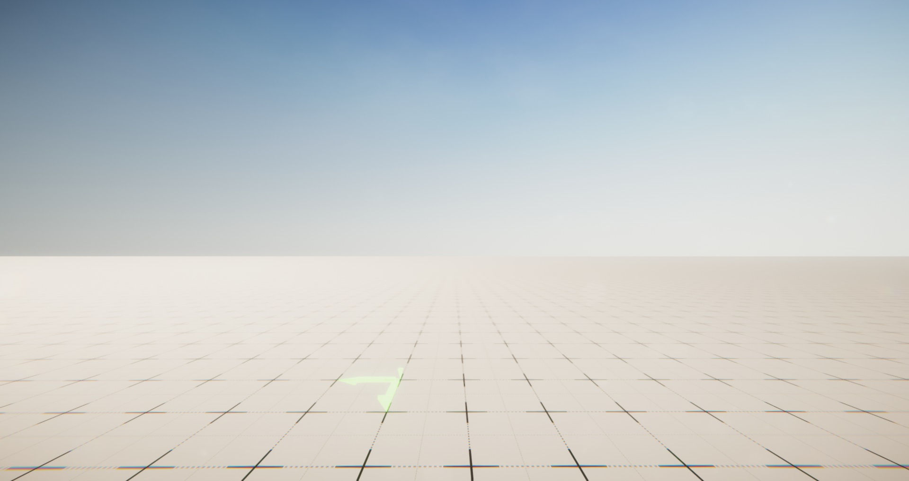
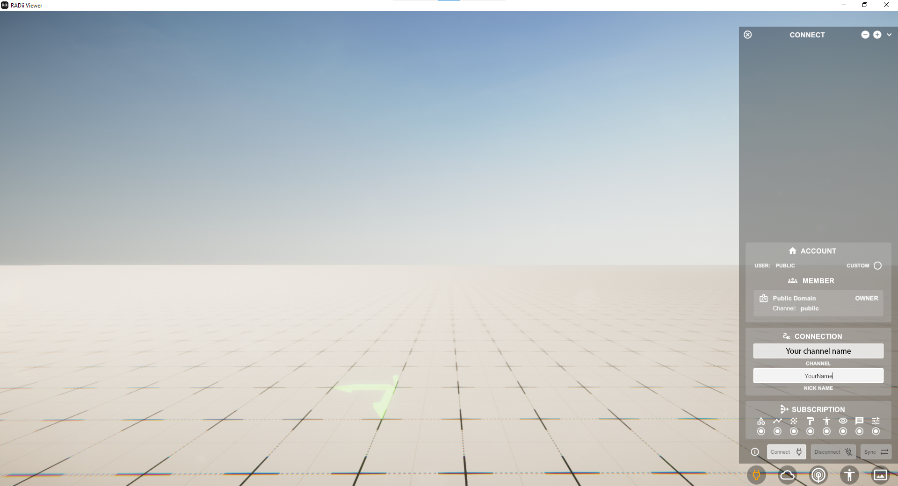
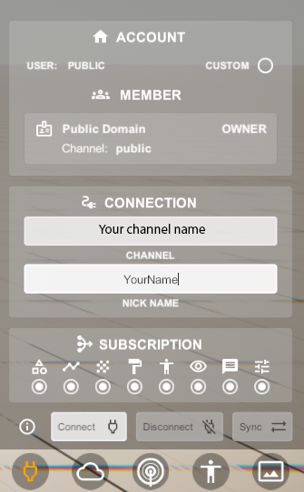
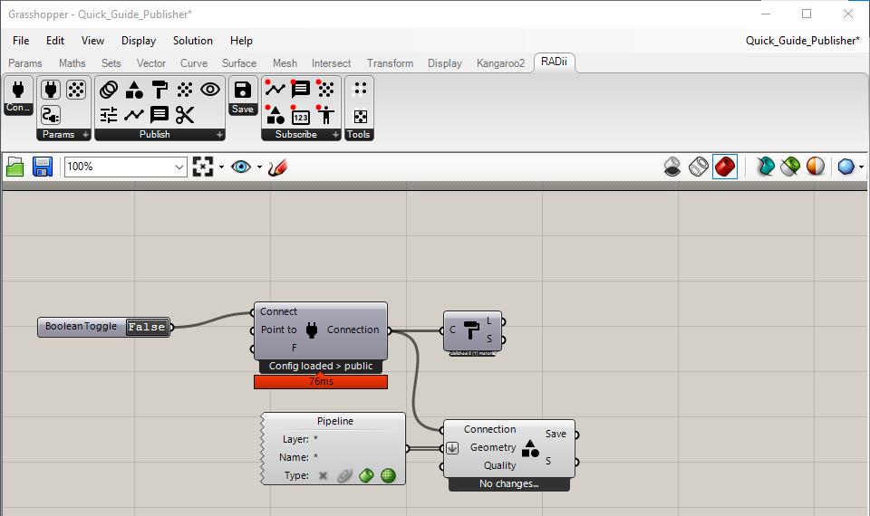
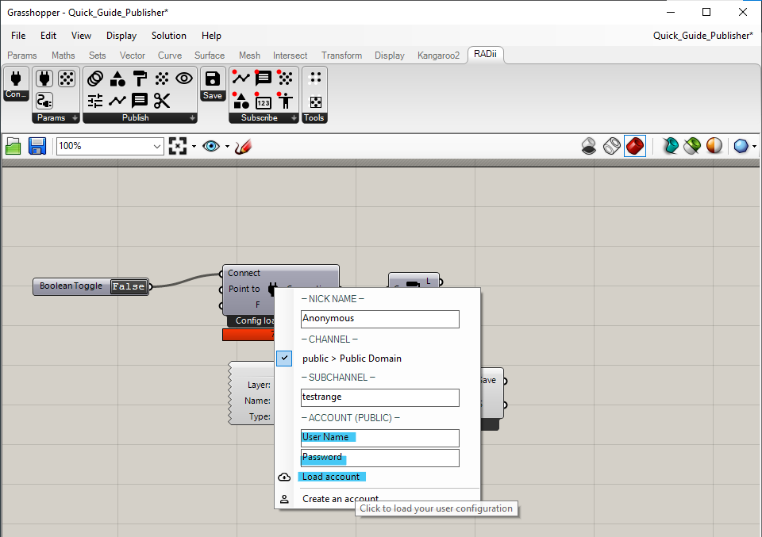
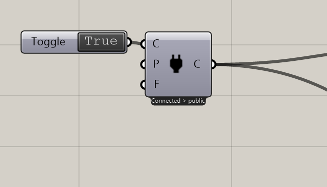

1. LV 1 Exploration tutorial¶
Length: ca. 20 min
This tutorial, is based on the Setup, in case you have not read through it please do this first. It will introduce the basics of the Radii Viewer and the Radii Grashopper plugin, on the basis of the introduction given at the Immersive Design Studio at ETH D-Arch. It will teach you first how to explore a model on Radii and then how you send it to someone else.
1.1. Radii Viewer¶
{kind=link}
Keyboard Assignments
Movement |
W,A,S,D |
Jump |
Space |
Shift |
Sprint |
Q Fly |
Up |
E Fly |
Down |
Right Mouse |
Main Menu (open,close)(3.1-3.5) |
Left Mouse |
Operation Menu (3.6) |
1. Open the RadiiViewer_
Now you should have an empty scene in front of you, looking like this:
2. Open Viewer Main Menu
Right-click to open & close the ConnectMenu that appears on the right side of the window. The + and - at the top let you change the size of the menu.
3. Connect to channel
Type your CHANNEL name in the “Your channel name” field and a nickname of your choice below (this name will be visible to other users in the channel) then press “connect” to join the channel. If you are joining a channel later, press the Sync button to the right of “connect”. This will aks the person publishing(sending) the model, to resend it.
Note: If you type in a channel name that does not exist so far it is generated and you will be able to connect nonetheless, this means that in case of a typo you will not be notified that something is wrong with your channel name. In the case that you are not able to receive any geometry, triple check that you have the right address.
Congratulation
You are now connected to a channel and can use the Radii viewer.
1.2. Radii grashopper¶
This is a quick introduction into publishing/uploading your files to RADii. While it is possible to publish in the public channel without an account on radii.info we advice to make one if you want to have your personal space. You can do substantially more with the tool as you will find in more detail on the RadiiViewer and RadiiGrashopper documentation
The following tool will Publish/Upload all the Geometry in your rhino file. Use it with care and not with big models.
1. How to build a basic file to publish
Every RadiiGrashopper file starts with the Connect component it always comes with a boolean (True/False) and the actual component. Every component that is intended for publication(sending) will have to be connected to this first one via the connect in- and Output.
Second comes the PublishGeometry component that is connected to the Connect. It needs a geometry input of any kind, in our case we use a geometry pipeline. Make sure to activate the two icons on the right as shown in the example picture, they should be in color.
Third is PublishMaterial , add it to the file and connect it to Connect . It will include possible textures of your model.
2. Enter Credentials
Right click on the Connect component and log in with your Radii.info account and password you have created during the setup on Radii.info, left click on “load account” to log in. Your private domain will show up under - CHANNEL - and possibly others if you are part of a class or group, we have blanked out our group name in the example image.
3. Choose domain and channel
Right click on the Connect component, there should be a tick next to “username > My Domain”, in this state your would publish your geometry on on your personal channel.
If you want to publish on your groups channel, change the tick to its respective name, in this example that could be sun and should show up as “ sun > My Domain” Press Enter to confirm.
More information about channel addresses under Connect.
IMPORTANT: you have to publish to the same channel that you are connected with in the viewer - typos leave you stranded. If you save your grasshopper file, it will remember your login settings and channel. The viewer will also remember the channel that it was connected to.

4. Connect
To activate the connection to the channel double click on the dark “false” on the Boolean Toggle to turn it into true.
Congratulations, your model should now appear in your Radii viewer!